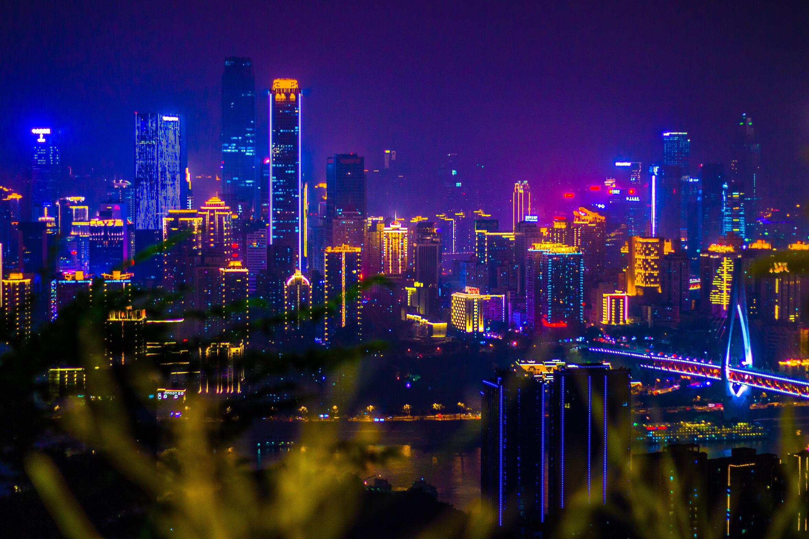
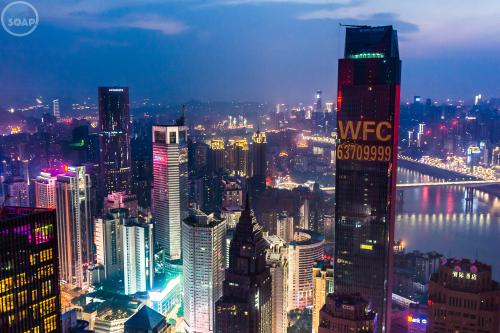
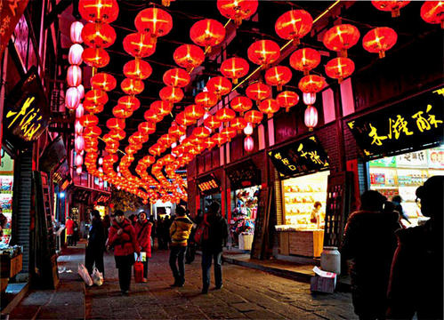
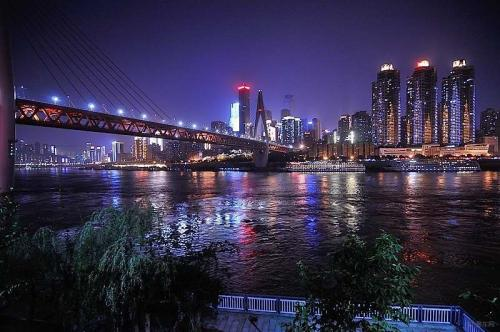
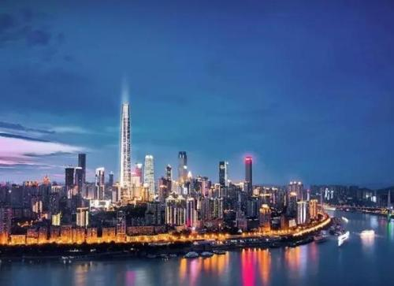
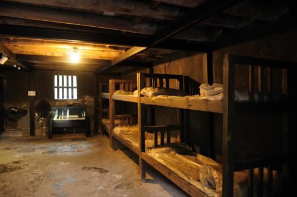

重庆，简称“渝”。 为中华人民共和国省级行政区，中西部唯一的直辖市、国家中心城市 、超大城市、国际大都市，长江上游地区的经济、金融、科创、航运和商贸物流中心， 西部大开发重要的战略支点、“一带一路”和长江经济带重要联结点以及内陆开放高地。 重庆地处中国西南部，东邻湖北、湖南，南靠贵州，西接四川，北连陕西。地形由南北向长江河谷倾斜，地貌以丘陵、山地为主，既以江城、雾都、桥都著称，又以山城扬名。 其山地占76%；长江自西向东横贯境内，流程691千米。2018年，重庆总面积8.24万平方千米，辖38个区县（自治县）；常住人口3101.79万，主城建成区面积732平方公里 ，地区生产总值20363.19亿元；有中国火锅之都、中国会展名城 、世界温泉之都之称。



